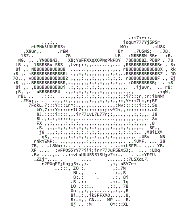

<canvas id="c"></canvas>
<canvas id="staticC"></canvas>

<script src="http://cdnjs.cloudflare.com/ajax/libs/fabric.js/1.6.3/fabric.min.js"></script>
<script>
    var canvas = new fabric.Canvas("c");
    var circle = new fabric.Circle({
        radius: 100,
        fill: '#eef',
        scaleY: 0.5,
        originX: 'center',
        originY: 'center'
    });

    var text = new fabric.Text('hello world', {
        fontSize: 30,
        originX: 'center',
        originY: 'center'
    });

//    var group = new fabric.Group([ circle, text ], {
//        left: 150,
//        top: 100,
//        angle: -10
//    });
//
//    canvas.add(group);
    canvas.add(circle, text);

    var group = new fabric.Group([ circle, text ], {
        left: 150,
        top: 100,
        angle: -10
    });
    canvas.add(group);

</script>